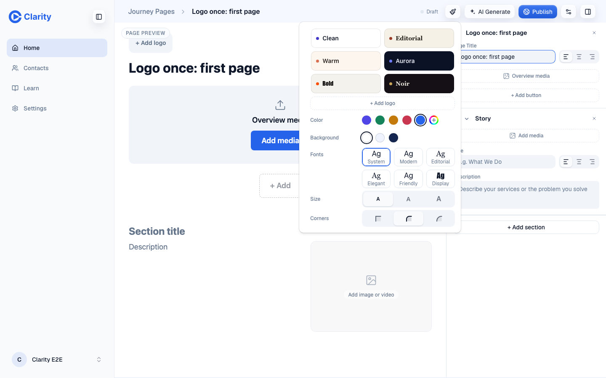
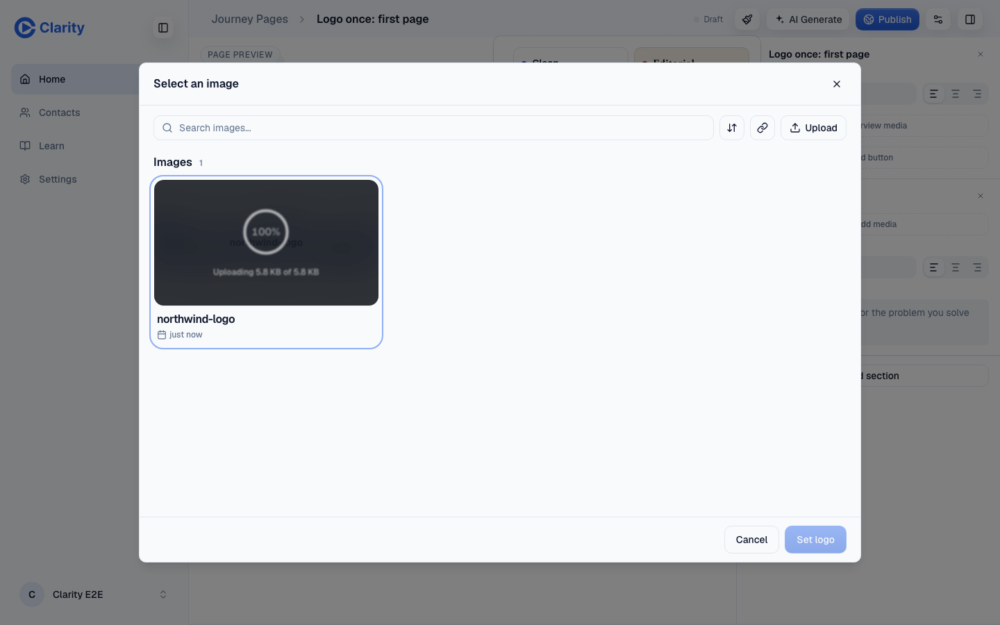
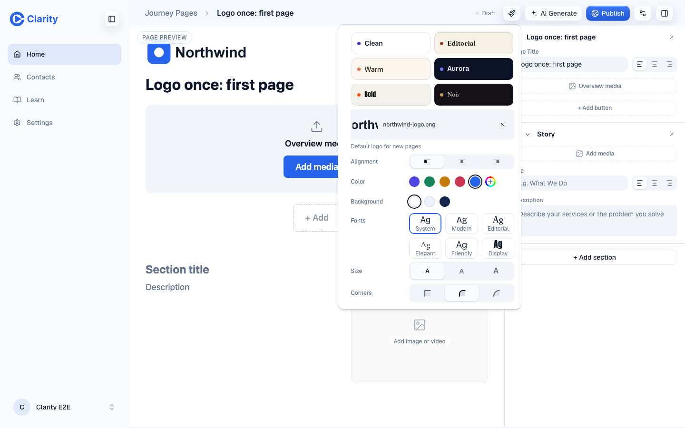
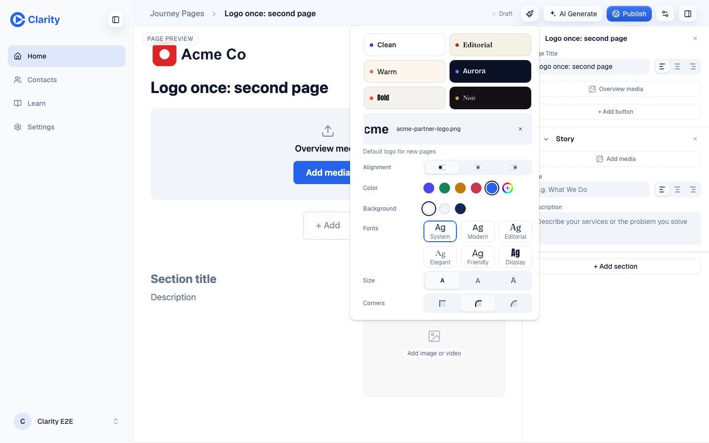
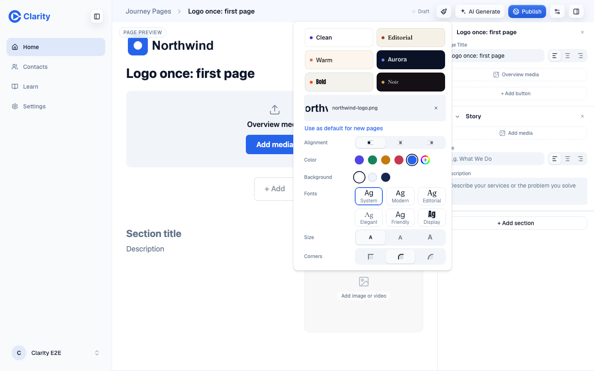
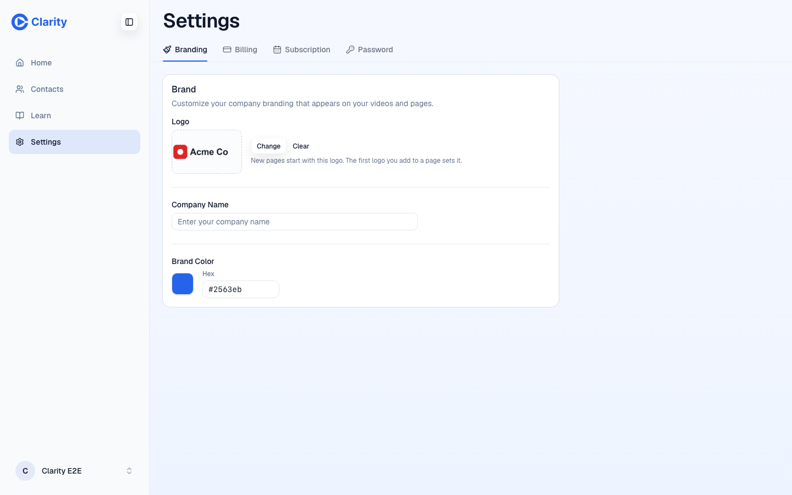

Add your logo once
Clarity already had a default logo for new pages, but only Settings could set it. Reps add their logo inside the page editor, so the default stayed empty and every new page started without a logo. Now the first logo a rep adds to any page becomes the default. New pages start with it. A different logo on one page stays on that page unless the rep clicks "Use as default for new pages".
1. First page, no default yet



PUT /api/tree/brand {"kind":"adopt-logo"} with brandLogoPreference: "selected".2. Next new page
3. One page needs a different logo


4. Settings

Open questions for William
| Question | What the PR does now | Other option |
|---|---|---|
| Should changing the default update existing pages? | No. A page copies the default when it is created. Published pages never change behind the rep's back. | Pages that use the default follow it live. Needs a "use account logo" marker on the page and a migration. |
| Should a new page logo replace the default every time? | No. Only the first logo is adopted automatically. After that, one click. | Last logo wins. Fewer clicks, but one co-branded page silently changes every later page. |
| Should the logo live on the team instead of the person? | No. It is per rep, like the rest of the workspace. | A Customer Organization logo that members inherit. Waits on organization sharing. |
| Video share pages | They also start with the default, as before. Adopting a page logo now fills it for reps who never opened Settings. | Keep share pages logo-free unless set in Settings. |